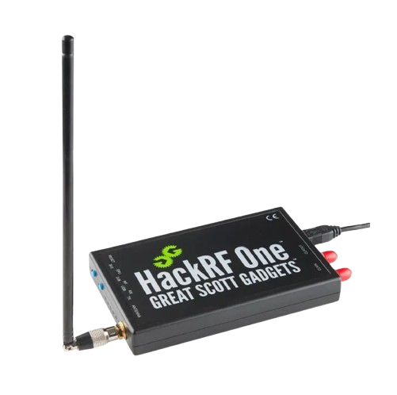
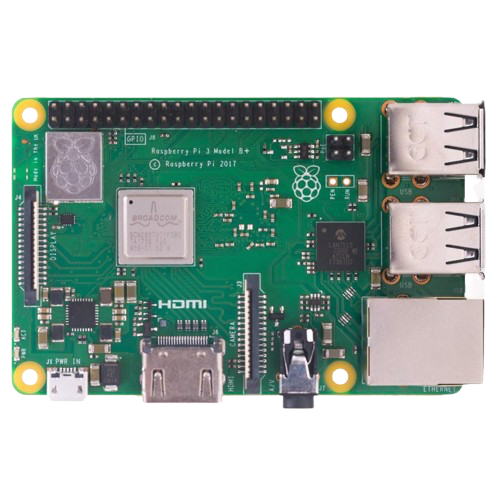

OY32-MOD
Der OY32-MOD ist ein kompaktes Mikrocontroller-Modul, das von
Omar Yacoubi entwickelt wurde – speziell für Entwickler, Tüftler
und Maker, die ein leistungsfähiges und vielseitiges Gerät für ihre
Projekte suchen. Mit durchdachter Hardware, klarer Struktur und
robuster Bauweise bietet der OY32-MOD alles, was man für interaktive
Elektronik braucht – auf nur 65x65 mm.
Der OY32-MOD kostet inklusive Batterie nur 25 Euro und bringt alles mit,
was du für prototypische Ideen, Spiele, Tools oder Steuerungen brauchst.
Was kannst du damit machen?
• Spiele entwickeln (z. B. Snake, Menüs, Minigames)
• Sensor-Daten visualisieren (Temperatur, Helligkeit, Bewegung)
• Geräte fernsteuern (per WLAN oder Bluetooth)
• Benutzeroberflächen erstellen (z. B. für IoT-Projekte)
• Tastengesteuerte Menüs programmieren
• Statusanzeigen oder Warnsysteme bauen
Typische Anwendungsbereiche:
• DIY-Projekte
• IoT-Entwicklung
• Technische Bildung
• Embedded Prototyping
• Interaktive Tools & Gadgets
Zum Produkt
FLIPPER-ZERO
Der Flipper Zero ist ein tragbares Hacking-Tool im Taschenformat,
das aussieht wie ein Spielzeug, aber jede Menge Technik in sich hat.
Es wurde von Pavel Zhovner und seinem Team entwickelt und 2020 über
Kickstarter finanziert. Heute ist es besonders beliebt bei Hackern,
Technikfans und Sicherheitsforschern.
Mit dem Flipper Zero kannst du drahtlose Signale analysieren,
Geräte fernsteuern oder Zugangssysteme testen – alles auf legale
und verantwortungsvolle Weise. Das Gerät kostet je nach Anbieter
zwischen 150 und 250 Euro.
Funktionen auf einen Blick:
• RFID/NFC: Karten lesen, emulieren, klonen
• Sub-1 GHz: Funkfernbedienungen analysieren und senden
• Infrarot: Fernseher & Geräte steuern
• iButton: Digitale Schlüssel emulieren
• BadUSB: Automatisierte Tastatureingaben am PC
• GPIO: Anschluss für externe Hardware
• Bluetooth: Verbindung zur Smartphone-App
Einsatzgebiete:
• IT-Sicherheit & Penetrationstests
• Home-Automation
• Lernen & Experimentieren mit Funktechnik
Zum Produkt

HACKRF ONE
Der HackRF One ist ein professionelles Software Defined Radio (SDR)
für alle, die Funktechnologie analysieren, testen oder erforschen wollen.
Entwickelt von Michael Ossmann und Great Scott Gadgets, bietet das Gerät
volle Kontrolle über ein breites Frequenzspektrum – von 1 MHz bis 6 GHz.
Ideal für Sicherheitsforscher, Funkamateure und Universitäten, ist der
HackRF One eines der vielseitigsten Werkzeuge auf dem Markt. Der Preis
liegt je nach Anbieter bei etwa 280–350 Euro.
Funktionen im Überblick:
• Empfang & Übertragung (Half-Duplex)
• Unterstützt GNURadio, SDR#, SDRangel u.v.m.
• USB-Anschluss, SMA-Antennenport
• Open-Source & vielseitig erweiterbar
Was du damit machen kannst:
• Funknetze wie GSM, LoRa, Bluetooth analysieren
• Signale decodieren oder simulieren
• Schwachstellen in drahtlosen Systemen finden
• Prototypen für drahtlose Kommunikation entwickeln
Zum Produkt

RASPBERRY PI
Der Raspberry Pi Zero ist ein ultrakompakter, kostengünstiger
Mini-Computer, der trotz seiner Größe viel Leistung bietet. Ideal für
einfache Linux-Projekte, Automatisierungen oder DIY-Geräte – und
perfekt geeignet für Einsteiger und Profis.
Er wurde von der Raspberry Pi Foundation entwickelt und ist für nur 5
bis 20 Euro erhältlich – je nach Modell (z. B. Zero, Zero W mit
WLAN/Bluetooth oder Zero 2 W mit mehr Leistung).
Funktionen im Überblick:
• 1 GHz Single-Core (Zero), Quad-Core (Zero 2 W)
• Bis zu 512 MB RAM
• Mini-HDMI, USB OTG, GPIO-Leiste
• MicroSD-Kartenslot für Betriebssystem & Daten
• (optional) WLAN & Bluetooth beim Zero W/Zero 2 W
Typische Einsatzmöglichkeiten:
• Kleine Server & Steuerungen
• IoT-Geräte & Home Automation
• Medienzentralen & Retro-Emulatoren
• Roboter, Sensorprojekte, Mini-Displays
Zum Produkt
PINEAPPLE
Der WiFi Pineapple von Hak5 ist ein spezialisiertes Gerät für drahtlose
Netzwerkanalyse und Penetrationstests. Es wird von IT-Sicherheitsexperten,
Ethical Hackern und Red-Teams weltweit eingesetzt, um WLAN-Sicherheitslücken
aufzudecken und realistische Angriffsszenarien zu simulieren.
Je nach Modell liegt der Preis bei etwa 130–250 Euro.
Funktionen im Überblick:
• WLAN-Analyse & MITM-Angriffe (z. B. Evil Twin)
• Automatisiertes Scannen & Logging von Netzwerken
• Webinterface & Skripting über PineAP
• Dualband-WLAN & USB-Erweiterbarkeit
• Cloud Sync & Remote Access (ab Mark VII)
Typische Einsatzbereiche:
• WLAN-Sicherheitstests
• Red Team Assessments
• Netzwerkschwachstellen aufdecken
• Sicherheitsforschung & Schulungen
Zum Produkt